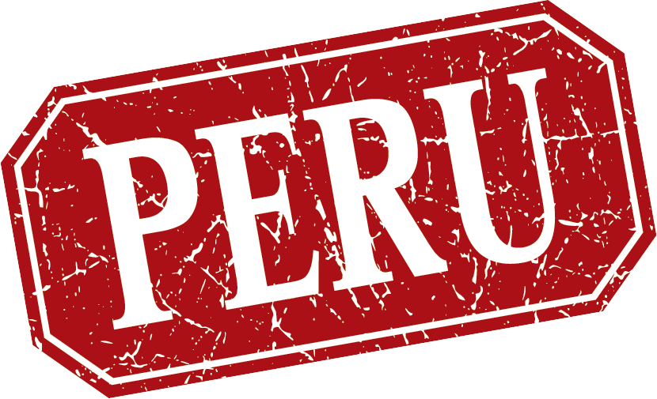

Perú

El Perú (en quechua y en aimara: Piruw), oficialmente la República del Perú, es un país soberano del oeste de América del Sur. El océano Pacífico bordea su costa y limita con Ecuador y Colombia al norte, Brasil al este, y Bolivia y Chile al sureste. Su territorio se compone de diversos paisajes: los valles, las mesetas y las altas cumbres de los Andes se despliegan al oeste hacia la costa desértica y al este hacia la Amazonia. Es uno de los países con mayor diversidad biológica y mayores recursos minerales del mundo. El Antiguo Perú fue una región de sucesivas civilizaciones desde el surgimiento de Caral-Supe en el 3200 a. C.17 El Imperio incaico fue el último Estado autóctono o indígena, el cual dominó gran parte del occidente sudamericano hacia el siglo xv. Con el siguiente siglo advino la Conquista del incario, tras la cual el territorio se configuró como un virreinato del Imperio español articulado en torno a la explotación de plata y oro con trabajo forzado de indígenas y de esclavos africanos en minas y haciendas. Las reformas borbónicas del siglo xviii suscitaron diversos levantamientos contra la autoridad colonial, cuyo máximo exponente fue la rebelión de Túpac Amaru II. Con la ocupación de España y la promulgación de la constitución de 1812, se difundieron ideas de autonomía política en la América española. La Independencia se proclamó formalmente en 1821, y fue saldada en la batalla de Ayacucho tres años después. El país se mantuvo en recesión y bajo el caudillismo militar hasta la bonanza y declive de la era del Guano, que culminó poco antes de la Guerra del Pacífico. En la posguerra, se cimentó una política oligárquica que prevaleció hasta el fin del Oncenio. Los sucesivos gobiernos democráticos fueron constantemente interrumpidos por golpes de Estado. En 1968, se impuso una dictadura militar que introdujo diversas y profundas reformas de corte nacionalista. El gobierno democrático y representativo fue restablecido en 1980, así también se dieron inicio un sangriento conflicto armado entre los grupos terroristas de Sendero Luminoso y el MRTA y el Estado en la sierra sur así como la crisis inflacionaria de fines de la década. En los años 1990 se implementó un modelo neoliberal, cuyas bases continúan vigentes. A inicios del siglo xxi, el país experimentó un importante crecimiento económico y reducción de la pobreza, aun soportando una fuerte desigualdad y una renta per cápita por debajo de la media mundial. Es considerado un país en vías de desarrollo. Entre sus principales actividades económicas se incluyen la agricultura, la minería, la pesca, la construcción y el comercio. La cultura peruana es diversa como resultado del intenso mestizaje originado en la colonia. A ello se une la posterior influencia de migraciones decimonónicas procedentes de China, Japón y Europa. El idioma principal y más hablado es el español, aunque un número significativo de peruanos habla diversas lenguas nativas, siendo la más extendida el quechua sureño. Políticamente, el país está organizado como una república presidencialista con un sistema multipartidista estructurado bajo los principios de separación de poderes y descentralización. Administrativamente, se divide en veinticuatro departamentos y la provincia constitucional del Callao.